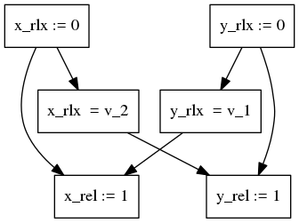

Examples of pomsets from Podkopaev-al:draft
Table of Contents
1 Message-Passing (MP)
1.1 With relaxed modifiers (MP rlx+na)
f_rlx := 0; d_na := 0; d_na := 5; || repeat f_rlx end; f_rlx := 1 || r = d_na

1.2 With relaxed and release modifiers (MP rel+rlx+na)
f_rlx := 0; d_na := 0; d_na := 5; || repeat f_rlx end; f_rel := 1 || r = d_na
1.3 With relaxed and acquire modifiers (MP acq+rlx+na)
f_rlx := 0; d_na := 0; d_na := 5; || repeat f_acq end; f_rlx := 1 || r = d_na
1.4 With release and acquire modifiers (MP rel+acq+na)
f_rel := 0; d_na := 0; d_na := 5; || repeat f_acq end; f_rel := 1 || r = d_na

1.5 With release, acquire, and relaxed modifiers (MP rel+acq+na+rlx)
f_rel := 0; d_na := 0; d_na := 5; || repeat f_acq end; f_rel := 1; || r = d_na f_rlx := 2 ||

2 Load Buffering (LB)
2.1 With relaxed modifiers (LB rlx)
x_rlx := 0; y_rlx := 0; r1 = y_rlx; || r2 = x_rlx; x_rlx := 1 || y_rlx := 1

2.2 With release and relaxed modifiers (LB rel+rlx)
x_rlx := 0; y_rlx := 0; r1 = y_rlx; || r2 = x_rlx; x_rel := 1 || y_rel := 1
It should be possible to get \(r1 = 1 \land r2 = 1\) (v_1 and v_2).
Because of that there should be no edges between reads and writes
in left and right subthreads.

2.3 With acquire and relaxed modifiers (LB acq+rlx)
x_rlx := 0; y_rlx := 0; r1 = y_acq; || r2 = x_acq; x_rlx := 1 || y_rlx := 1
It should be possible to get \(r1 = 1 \land r2 = 1\) (v_1 and v_2).
Because of that there should be no edges between reads and writes
in left and right subthreads.

2.4 With release, acquire, and relaxed modifiers (LB rel+acq+rlx)
x_rlx := 0; y_rlx := 0; r1 = y_acq; || r2 = x_rlx; x_rlx := 1 || y_rel := 1
Problem: C11 outlaws \(r1 = 1 \land r2 = 1\) (v_1 and v_2) outcome for the snippet,
but the pomset doesn't address it.